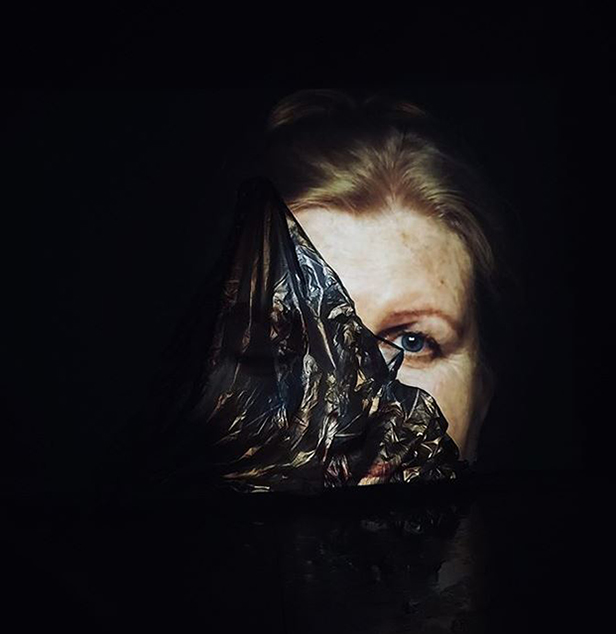
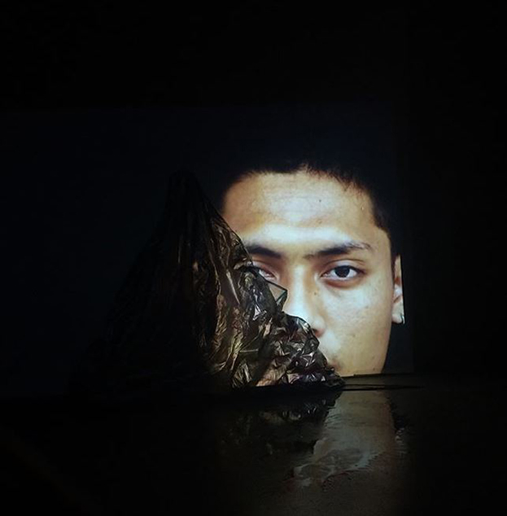
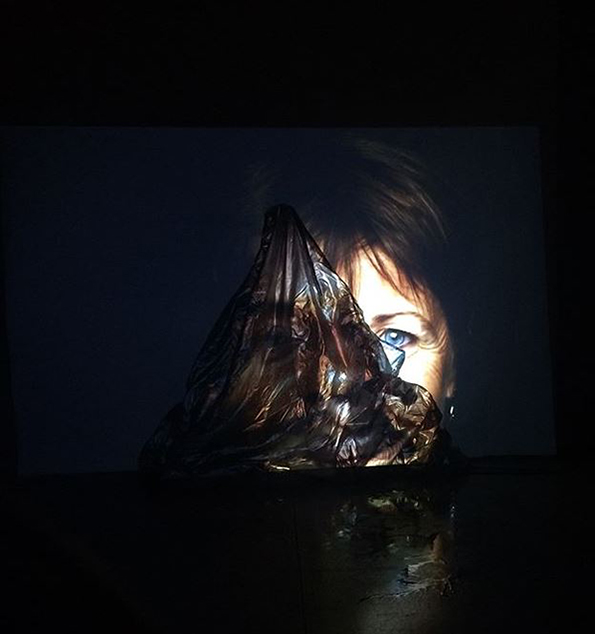

What if we could see the world with someone else eyes?
What if our face would have been of two colors? Or two genders faces, all in one?
What if we could change half of our face? How would we looked like? How would you like to look like?
Double Sided is a video-mapping interactive experiment.
The project aims to project the same video (faces which flow by) on two overlapped layers,
each of them on a different speed. Using an interactive mask, the user can uncover part (or all) of the first level video.
In this way, it would be possible to see part of the face of whom is "behind", on the second layer video.
So, the same part of two different faces are going to be overlapped.
Mostly, the project is an artistic prototype experiment in order to make people think and reflect over all the different kinds of discriminations and racism,
beside all the different kinds of masks people might wear every day.
The project have been developed in C++ using openFramework open source library.
It could be adapted to other idea. In fact, it is customazible.
The project have been designed and created together with the graphic designer Frazco Mendez Marchese
http://frazco.com.ar/



If you want to know more about Double Sided project, check out
this link.